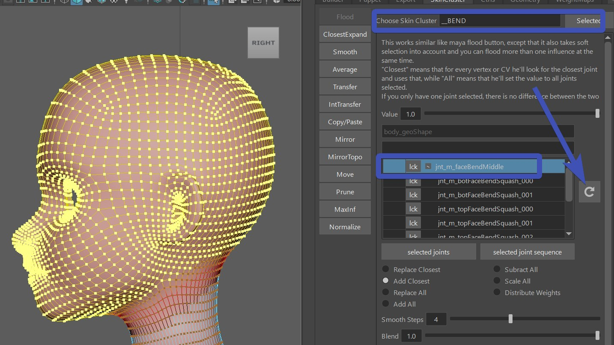
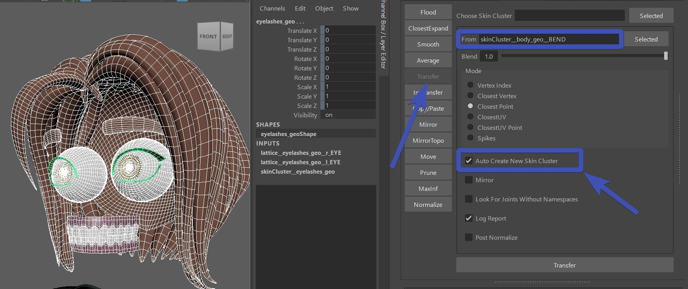
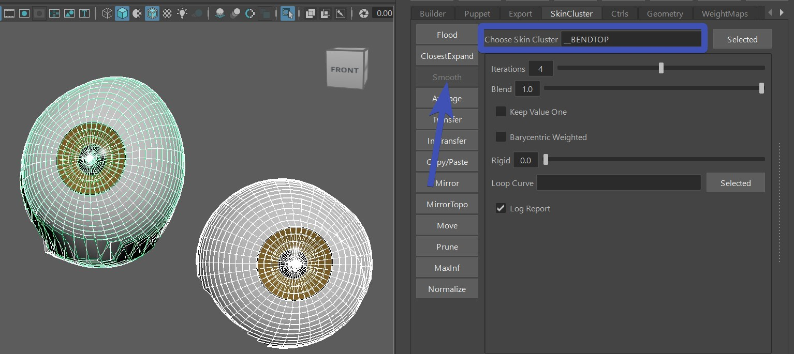
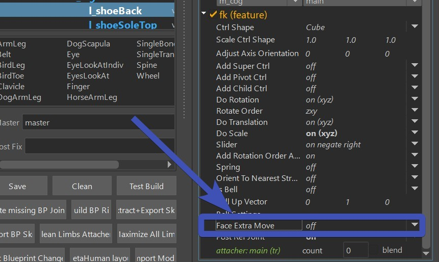

Squash/Stretch
The createBendSetup() function function is creating some general squash/stretch setup. They are two additional skinClusters, suffixed by __BEND and __BENDTOP.

Blueprints
When you click Create BPs, he just creates some colored joints that you need to lay out to the shape of the head

Ctrl Shapes
After running the createBendSetup() function, move those ctrl shapes to the right place, just be dragging their cvs:

And of course after that export the ctrls shapes.
Weights
It's very important to create the weights using the Kangaroo tools, because those are setting some important things
that other skinning tools won't.
These are the joints:
 But don't worry you don't actually have to look for them or select them in the scene or outliner. just follow the instructions
how to do that with the Flood tool, and you'll be done very fast with this.
But don't worry you don't actually have to look for them or select them in the scene or outliner. just follow the instructions
how to do that with the Flood tool, and you'll be done very fast with this.
Using the Flood tool
To create the skinClusters, having the main mesh selected start by clicking the buttons connect Influences (selectded Meshes) and connectInfluences TOP (selected meshes).
Then apply the rom animation by clicking the button create rom anim
In the Choose Skin Cluster field, specify __BEND, and click the reload button.
Bind everything above the neck to the jnt_m_faceBendMiddle. This is the main cube ctrl - frame 0 - 30 
Then in the flood tool select the jnt_m_botFaceBendSquash_001 joint and bind the bottom part of the face to it.

Note
Even though there's more bottom joints, the bottom part usually works better with painted to just one joint.
Next, the Choose Skin Cluster field, specify __BENDTOP, and click the reload button.
And bind the whole head to all the top influence joints

Transfer from main mesh to others
This can be easily done with the SkinCluster -> Transfer tool: Set the From to the name of the skinCluster that you created before, and turn Auto Create New SkinCluster on 
Warning
Do not forget the Auto Create New SkinCluster otherwise you will damage your existing weights.
Note
The auto create new skinCluster option doesn't always create new skinCluster. If the skinCluster with the proper suffix (__BEND or __BENDTOP) is already present, he'll use that instead of creating new one
Smooth
Especially the eyeballs will likely get some sharp corners from the weight transfer.
But those are easily fixed with the Smooth tool. Just make sure to enter __BENDTOP (or __BEND), and click smooth

Tweak it
When you look at the Rom or play around with the ctrls, it's probably not looking perfect yet.
You can adjust the squash/stretch values with the attributes on the passers of the ctrls.
Those get saved with the DEFAULT ATTRS button
And apart from that you might still need to spend some time tweaking the weights with the Smooth, Flood or Move tool.
Only one skinCluster option
You probably saw that by default he added all the bottom joints also into the __BEND skinCluster.
If could theoretically solve it all with one skinCluster, but then you'd have to adjust the blueprints
so the lower and upper blueprints are not overlapping each other.
Ctrls Following
Kangaroo tries to have most ctrls follow the squash/streth setup. This won't change the deformations, but animators still
appreciate it if ctrls are always staying with the face geo.
For all the facial setups this should happen automatically in the function parallelAttachCtrls().
But if you have some extra puppet limbs, you'll have to set this with the FaceExtraMove flag:
 Limbs that have it supported are spine, singleTransform, singleBone and belt
Limbs that have it supported are spine, singleTransform, singleBone and belt
Note
on some limbs that attribute might be a further below:
